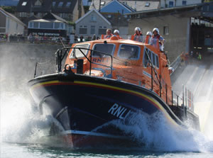
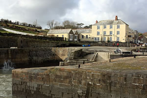

Sennen Lifeboat
{kind=link}
The Tamar Class "R.N.L.B. City of London III", built in 2009, is the Sennen Harbour station lifeboat. The Tamar is launched down one of the stations two slipways. The lifeboat is recovered in the shelter of the breakwater at high tide or up the launching slipway at low tide.
The D Class inshore lifeboat "Spirit of the R.L.C." is a fast response craft , capable of 25 knots with a crew of 3 . The ILB is user for operating close to the cliff,in surf and in moderate weather.
- Crew of 24 / 3
- 16m self-righting
- powered by two 1000hp Caterpillar C18 engines
- Top speed of 25 knots
Visit the daily images page to view the Lifeboat Stations daily image.
Popular Pages
Monthly Picture Quiz
 This months quiz picture.{kind=link}
Take part in our monthly quiz and win yourself a small prize.
Webcam & Daily Images
 Sennen Cove Daily Image
Sennen Cove Daily ImageFor the last five years we have been publishing daily images of the Sennen area.
Surfing in Sennen
 Daily Surf Image
Daily Surf ImageSennen is home to a world renowned surfing beach. The cove has one of the most consistent beach breaks in the UK.